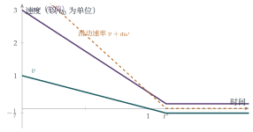

STEP III 1997，第 10 题
继续之前，请先阅读题目（原题为英文）。题目载于 STEP Support Programme 的题目资料库： step.maths.org/questions/97-s3-q10
引子
用手指按住一粒波子的后半部向下一压，波子便会一边向后旋转，一边向前弹出。它从你面前滑开，慢下来，停住，然后仿佛改变了主意似的滚回来。桌球（snooker）球手打“缩杆”（screw 或 draw）时用的正是同一效应：击打母球的下部，使它向后旋转，碰到目标球时停住，再退回来。
本题要求的是：后旋（backspin）恰好要多大，波子才会完全停定；又要多大，波子才会以初速的七分之一返回。计算时要追踪两个量，即线速度（linear velocity）和角速度（angular velocity），两者都由同一个摩擦力（frictional force）改变。这背后有一条漂亮的捷径：两者的某个组合完全不受摩擦力影响。
转动动力学（rotational dynamics）已于 2019 年从 STEP 考试范围中删去。这里你只需要知道：质量为 \(m\)、半径为 \(a\) 的实心球，绕直径的转动惯量（moment of inertia）为 \(I = \frac25ma^2\)；而力矩（torque）\(\tau\) 按 \(I\dot\omega = \tau\) 改变其角速度，这就是 \(m\dot v = F\) 的转动版本。
动笔之前
波子以 \(v\) 向前运动，并以 \(\omega\) 向后旋转。波子的最低点相对桌面移动得多快？摩擦力朝哪个方向作用？
最低点因波子本身的运动而有速度 \(v\)，再加上因后旋而来的 \(a\omega\)（后旋会把最低点带向前）。因此它以 \(v + a\omega\) 向前滑动，而摩擦力向后作用，阻碍滑动。只有当 \(v + a\omega = 0\) 时，波子才会纯滚动（rolling without slipping），即只滚不滑。
逐步解题
阶段 1 摩擦力的作用
设摩擦力为 \(F\)，方向向后。它对 \(v\) 有甚么影响？它对球心的力矩为 \(Fa\)：这会增加还是减少后旋？
摩擦力使波子减速：\(m\dot v = -F\)，所以 \(v = v_0 - \frac Fm t\)。由于它在波子底部向后作用，它同时产生一个阻碍后旋的力矩 \(Fa\)：\(I\dot\omega = -Fa\)，于是代入 \(I = \frac25ma^2\) 得 \[\omega = \omega_0 - \frac{5F}{2ma}t.\] 波子滑动期间，\(v\) 和 \(\omega\) 都稳定地减少。
阶段 2 完全停定
波子要完全停下来，\(v\) 和 \(\omega\) 必须在同一刻变成零。两者各在何时变成零？
\(v = 0\) 于 \(t = \frac{mv_0}{F}\)，而 \(\omega = 0\) 于 \(t = \frac{2ma\omega_0}{5F}\)。当 \(v_0 = \frac25a\omega_0\) 时两者相等，即 \[\frac{v_0}{a\omega_0} = \frac25. \qed\] 在那一刻，波子既无线速度亦无角速度，而摩擦力（只在有滑动时才作用）随即消失：波子就此停在原地。
阶段 3 滚回来
若后旋较大，\(v\) 变成零时 \(\omega\) 仍为正。最低点仍在向前滑动，所以摩擦力仍然向后作用。接下来会发生甚么事？滑动何时停止？
摩擦力继续把波子向后推，所以 \(v\) 变为负值，而 \(\omega\) 继续减少。当 \(v + a\omega = 0\) 时滑动停止： \[v_0 + a\omega_0 - \Bigl(\frac Fm + \frac{5F}{2m}\Bigr)t = 0, \qquad t^* = \frac{2m(v_0 + a\omega_0)}{7F}.\] 在那一刻， \[v = v_0 - \frac{2(v_0 + a\omega_0)}{7} = \frac{5v_0 - 2a\omega_0}{7}.\] 此后波子只滚不滑，摩擦力不再作用，\(v\) 保持不变。要它以速率 \(\frac{v_0}{7}\) 滚回来，我们需要 \(5v_0 - 2a\omega_0 = -v_0\)，所以 \[\frac{v_0}{a\omega_0} = \frac13. \qed\]

回顾
追踪两个量。摩擦力同时改变 \(v\) 和 \(\omega\)，两者的变率成固定比例。
知道力何时消失。滑动摩擦力只在有滑动时才作用；波子一旦滚动，它便停止作用。
滑动速率是关键变量。它线性地减少，而它变成零的一刻，正是由滑动转为滚动的一刻。
背后的数学
一个守恒量
要求最终速率，还有一个更快的方法。考虑波子对它与桌面接触点的角动量（angular momentum）。摩擦力正正作用于该点，所以对该点没有力矩，而法向反作用力（normal reaction）和重力都沿着通过该点的铅垂线作用。因此波子滑动期间，这个角动量守恒（conserved）。它等于 \(mva\)（来自球心的运动）减去 \(I\omega\)（后旋以负值计算）： \[L = mav - \tfrac25ma^2\omega.\] 当波子以速率 \(V\) 滚动时，\(a\omega = -V\)，角动量为 \(maV + \frac25maV = \frac75maV\)。令它等于初始值， \[\tfrac75maV = mav_0 - \tfrac25ma^2\omega_0, \qquad V = \frac{5v_0 - 2a\omega_0}{7},\] 答案相同，却完全不必提及摩擦力的大小，甚至不必理会它是否恒定。最终速率单凭守恒便已确定；摩擦力只决定要花多少时间才达到这个速率。
桌球、保龄球与网球
同样的分析可以解释许多运动中的现象。桌球被击中正中央时，起初滑动，然后开始滚动，最终速率为初速的 \(\frac57\)（在公式中取 \(\omega_0 = 0\)）。十瓶保龄球带侧旋掷出时，会沿球道滑行，到开始滚动时便“拐弯”。带上旋（topspin）的网球会急速下坠，不过这里的主要效应来自空气动力：旋转的球会使周围的空气偏转，这就是马格努斯效应（Magnus effect）。
科里奥利（Gaspard-Gustave Coriolis）如今因旋转参考系中的虚拟力（fictitious force）而为人所知（第 11.5 节），他在 1835 年写了一整本关于桌球数学的书：Théorie mathématique des effets du jeu de billard。他证明了不少结果，其中包括：带旋转击出的球，在滑动期间沿抛物线运动，到滚动时才走直线；他亦精确地分析了本题的缩杆打法。研究这项运动的物理学家至今仍会引用此书。
思维技巧
当一个力同时影响几个量时，写下它怎样改变每一个量，并找出一个它完全不会改变的组合。
这里摩擦力改变了 \(v\) 和 \(\omega\)，却没有改变对接触点的角动量。在大学里，寻找这类组合是一个反复出现的主题：选择对哪一点取矩，使未知的力自动消去，正是选择参考系的转动版本。
延伸练习
上旋。若波子起初带的是向前的旋转 \(\omega_0\) 而非后旋，求它最终的滚动速率。\(v_0/(a\omega_0)\) 取甚么值时它会加速？
桌球。一个球被击中正中央，以 \(v_0\) 开始滑动而不带旋转。证明它最终以 \(\frac57v_0\) 滚动，并求动能（kinetic energy）损失的比例。（滚动时的动能为 \(\frac12mV^2 + \frac12I\omega^2\)。）
圆环。对一个在自身所在平面内滚动的薄圆环重做本题，其 \(I = ma^2\)。现在 \(v_0/(a\omega_0)\) 为何值时，它会以 \(\frac{v_0}{7}\) 返回？
缩杆打法。桌球球杆必须击中球的甚么位置（在球心以上多高，以 \(a\) 表示），球才会从一开始便只滚不滑？（提示：考虑冲量（impulse）作用期间对接触点的角动量。）
延伸阅读
David Morin, Introduction to Classical Mechanics（Cambridge University Press），第 8 章，讲述角动量及带滑动的滚动。
Daniel Kleppner & Robert Kolenkow, An Introduction to Mechanics（Cambridge University Press），关于刚体运动的各章。
David Alciatore, The Illustrated Principles of Pool and Billiards（Sterling）。这项运动的物理学，附有大量图解。